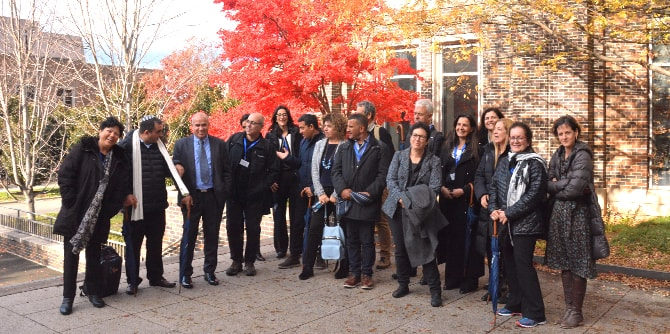

הסמינר, שהתקיים מ-25 בנובמבר עד 2 בדצמבר, עסק במגמה הגוברת בקרב ארגוני המגזר השלישי בכלל, ובקרב קרנות פילנתרופיות בפרט, להתמודד עם אתגרים חינוכיים וחברתיים ברמה מערכתית ולפעול להגדלת השפעתם בתחומים אלו באמצעות מעורבות בעיצוב מדיניות ציבורית.
בסמינר נבחנו יחסי הגומלין בין אסטרטגיות של קרנות פילנתרופיות לבין מדיניות ציבורית בהקשר האמריקאי. תהליך הלמידה התמקד בפיתוח ידע שעשוי לתרום לצמיחתן ולהתפתחותן של שותפויות בין-מגזריות מועילות המותאמות לצורכי החברה הישראלית. הבוגרים פגשו חוקרים, מומחים ואנשי עשייה ונחשפו לנקודות מבט גלובליות מגוונות. לצד ההמשגה התאורטית של הנושא נסקרו ונדונו מקרים קונקרטיים לשם המחשה והפקת לקחים, על-פי שיטת למידה ייחודית המבוססת על חקר מקרים שפותחה בבית הספר סנפורד למדיניות ציבורית. מתודה זו יצרה שפה חדשה המנגישה ידע מבוסס פרקטיקה, והיא מאפשרת לבחון אתגרים מנהיגותיים וניהוליים מזווית ייחודית.

צפון קרוליינה ידועה בהיותה בית לאחד ממרכזי המחקר והפיתוח המובילים בעולם ההיי-טק (The Research Triangle Park). מיקומו של הסמינר אפשר להעמיק בנושאים נוספים שלהם רלוונטיות רבה לעשייתם של הבוגרים: חינוך וטכנולוגיה ונושאים של חדשנות חינוכית ויזמות. הבוגרים ביקרו במרכזים העוסקים בפיתוח מנהיגות ועידוד יזמות, שמעו הרצאות מפי חוקרים מובילים – בהם זוכה פרס נובל לכימיה לשנת 2012 – פרופ' רוברט לבקוביץ, פגשו מייסדים של קרנות פילנתרופיות וארגוני מגזר שלישי ושמעו מפיהם על חזונם ועל תאוריית השינוי שלהם.
הסמינר היווה עבור הבוגרים הזדמנות להרחיב את מעגלי השפעתם ולהפיץ את התפיסות והמודלים החינוכיים הייחודיים שפיתחו. את הסמינר הובילה ד"ר גרניט אלמוג ברקת, מנהלת יחידת בוגרי מנדל, ובהנחייתו היה שותף דני בר גיורא, מנהל בית ספר מנדל למנהיגות חינוכית.
{kind=link}